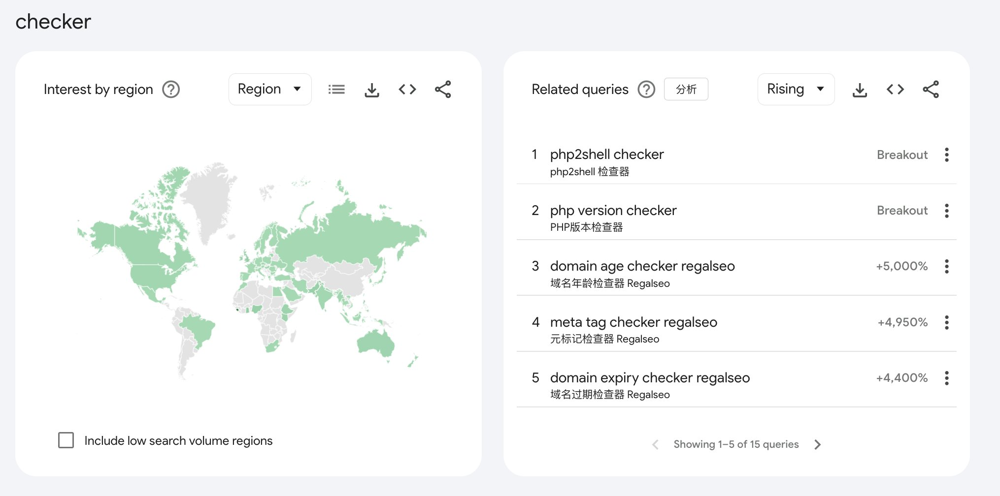
今天早课还是从经典词根开始。先刷 generator / maker / creator / builder / editor，再切到 converter / calculator / checker / detector。
checker 的 Rising Queries 里冒出一批 PHP 相关需求。最近 PHP 漏洞传播很广，php2shell checker 和 php version checker 都值得看一眼。
把这两个词放进 Trends，7 天图上有明显的热度；拉到 12 个月，基本就是突发脉冲。我的感觉，这类漏洞事件可能会把一部分人带到长期的 PHP 版本检测需求上，不过现在追这波热点已经有点晚了。
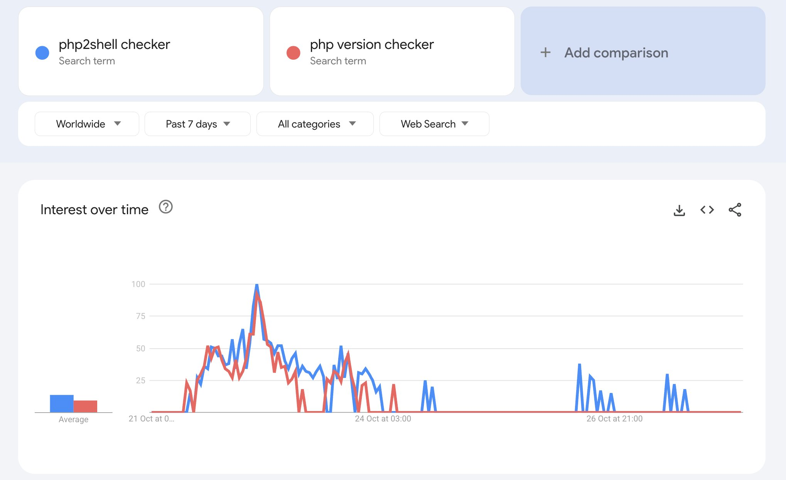
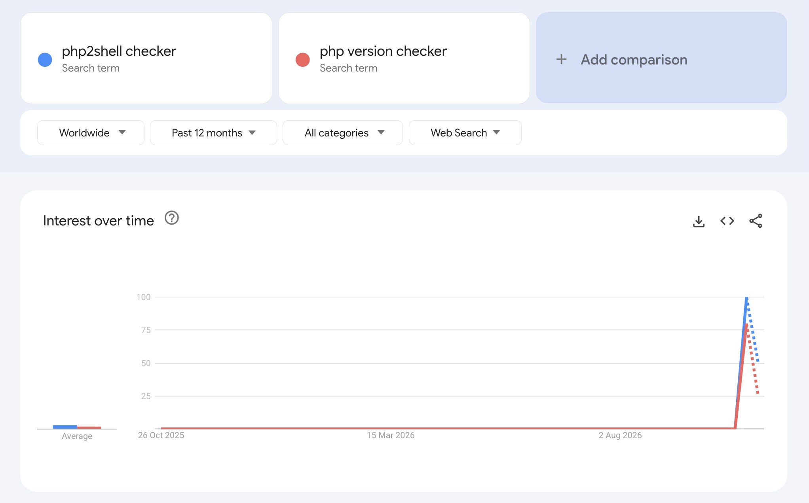
于是转去 Google 搜 php version checker。SERP 里基本都是大站的内页，没看到明显的新站机会，但排在前面的 webaloha.co 引起了我的注意。它不是那种一眼就认得出来的大品牌，这个位置怎么拿到的？
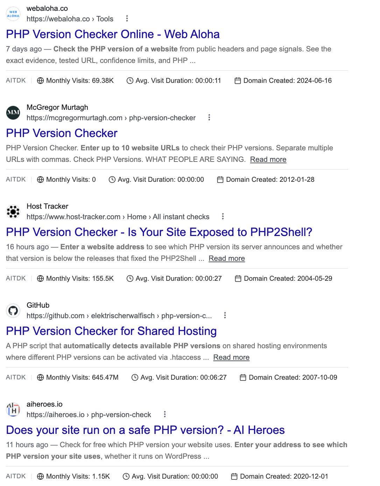
从一个 PHP 工具追到 Web Aloha
打开 webaloha.co，发现它是一家做网站设计、SEO、GEO 的 Agency。站点做得相当完整，工具、文章、服务、客户案例都有，内页大约 324 个。页面基础指标也都处理得很到位。
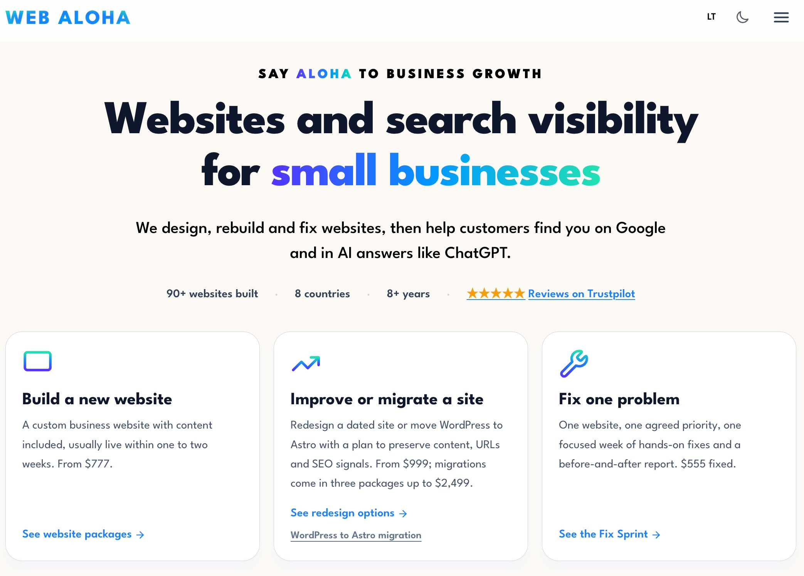
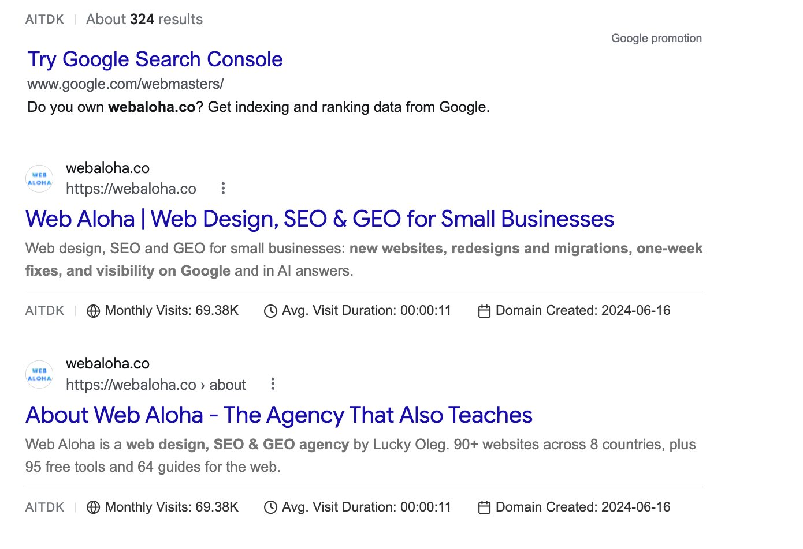
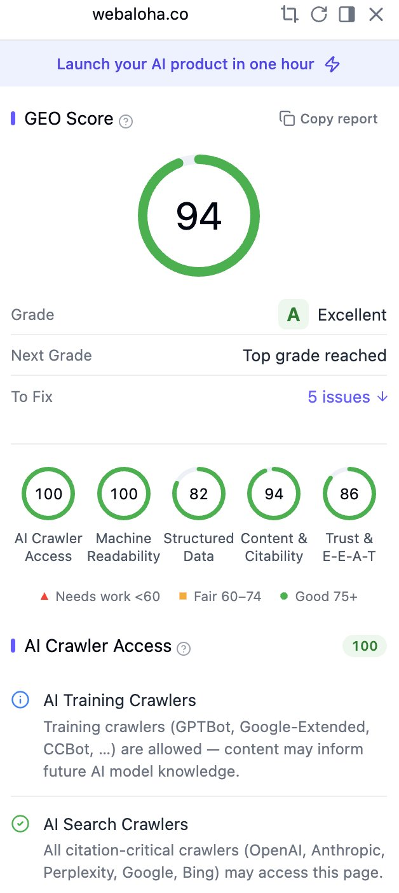
再看 Ahrefs。网站 DR 在 59 左右，自然搜索关键词约 695 个，已经不是一个靠运气起量的小站。最开始我还以为它是很短时间就把 DR 做到 50 多的新域名；往历史翻，2024 年 7 月它就已经有 DR 54。这个基础需要记住，后面研究页面增长，不能把它当成 DR 0 冷启动。
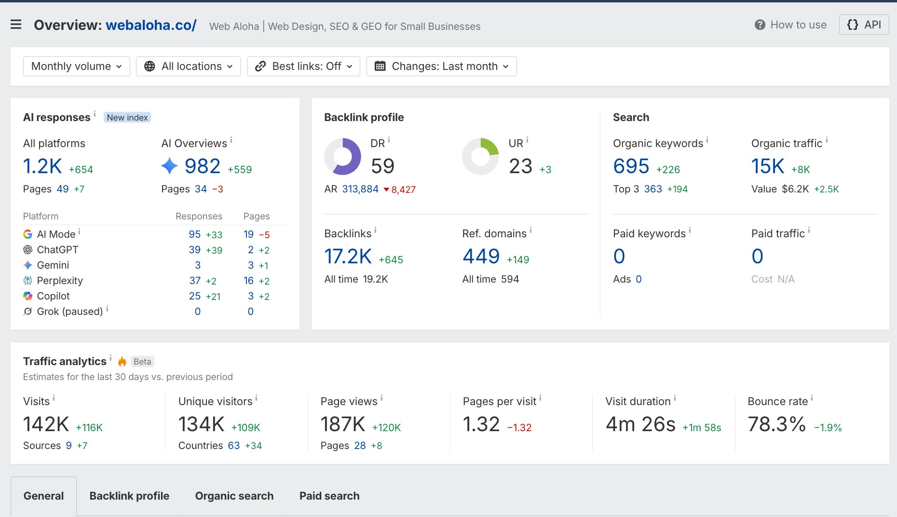
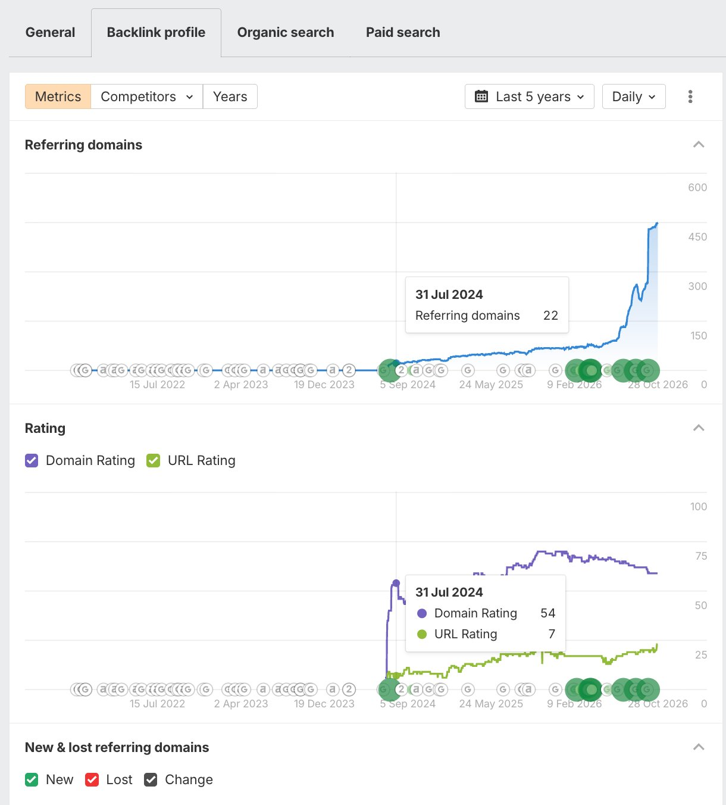
再看 AITDK 的历史访问量：2026 年 3 月约 1,717，4 月开始上升，到 9 月已经接近 7 万/月。 这个增长斜率很明显。
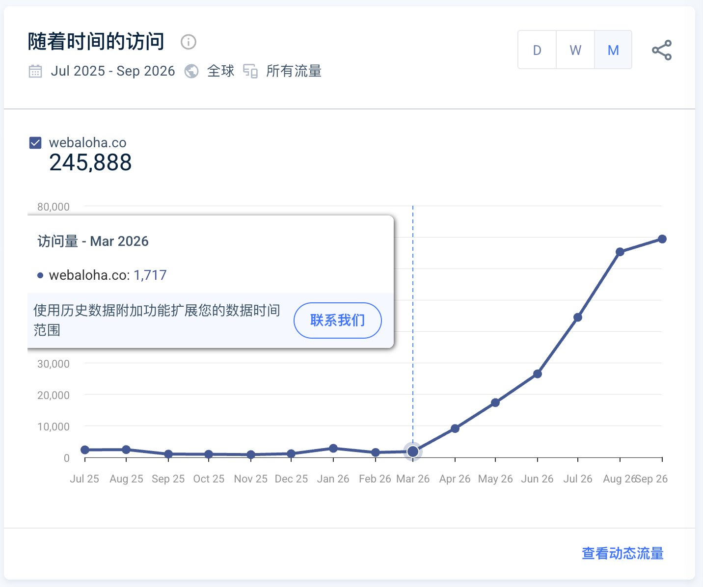
它一定做对了什么。
第一反应是研究今年春季的内容扩张。网站在 4 月几次集中发布 SEO 文章，工具数量也已经相当多。我猜它吃到了这一批工具词，再反哺品牌。网站整体的组织方式也值得学：工具解决具体任务，指南覆盖相关问题，原创研究提供独特数据，商业服务承接潜在客户。
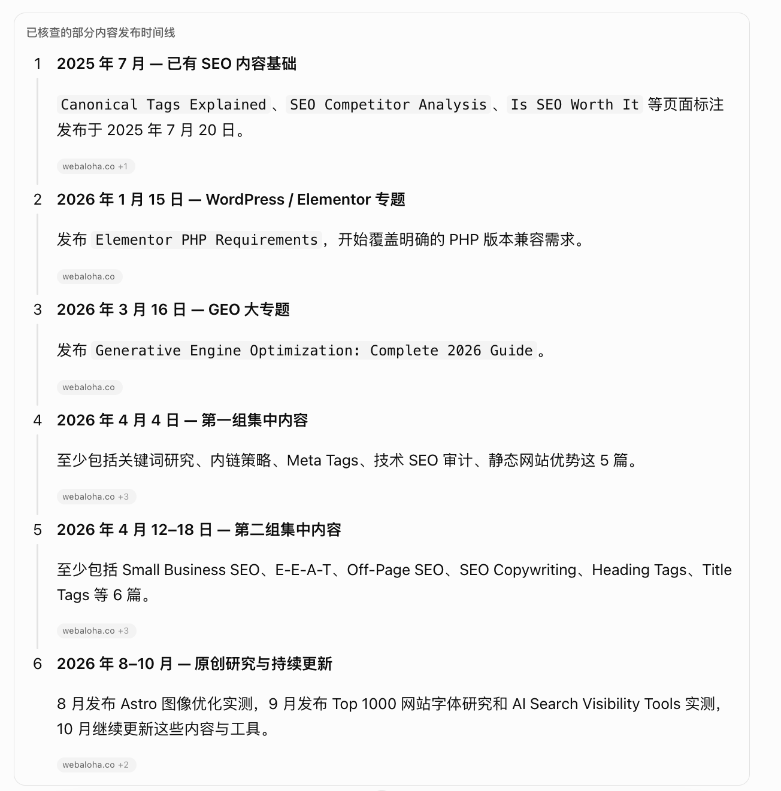
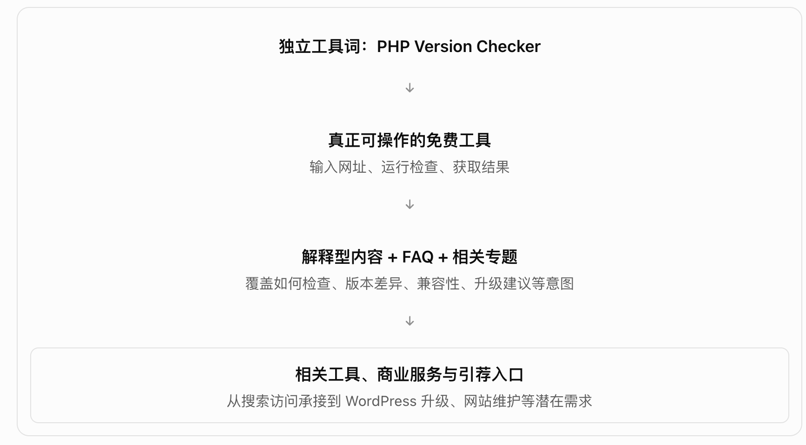
不过，判断它靠什么涨起来，不能停留在首页和内容目录。直接打开 Ahrefs 的 Organic search → Top pages。
95 个工具，最后却是一张页面拿走了 78.2%
结果很有意思。
10 月 28 日 Ahrefs 估算全站自然搜索流量约 15K/月，其中 Website Font Checker 单页就有 11,763，占 78.2%。第二名 Schema Markup Validator 只有 301，Website Technology Checker 284，最初把我们带进来的 PHP Version Checker 只有 275。
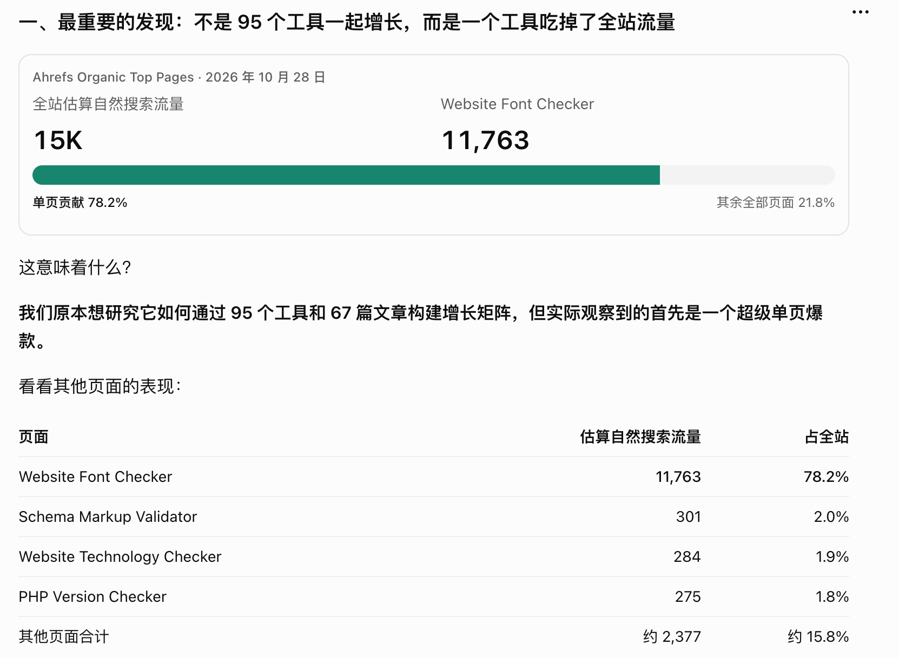
这就把刚才「工具矩阵一起带动增长」的想法改掉了。网站确实做了大量工具，但 Google 自然搜索的主要收益集中在一个 URL。
继续反查这个 URL 的 Organic Keywords。font identifier、font detector、find my font、font search、font finder，全部都是搜索量相当大的词。仅 font identifier 一个词，在全站关键词报告里就有约 4,432 估算流量；font detector 约 2,382，find my font 约 1,002。
而它的工具原本是输入一个网址，检测该网页声明了什么字体。这和从图片里识别字体并不是完全相同的任务。一个具体的 Website Font Checker，最后却在 font identifier / detector / finder 这些更宽泛的词上拿到了排名。
即使是 DR 50 以上的大站，找对一个工具词、正确上一个内页的 ROI，也是所有行为中最高的。
但这个页面不是上线就有 1.2 万流量的。接下来要把它的增长过程还原出来。
真正的流量拐点在 9 月，不是 10 月
把 Ahrefs 查询范围切到 Font Checker 单页，先看关键词数量。7 月 3 日，它在 Ahrefs 里只有 4 个排名关键词：1 个 Top 3、2 个 Top 4–10、1 个 Top 21–50。8 月下旬开始明显扩张，9 月进入持续增长，10 月的关键词覆盖更大。
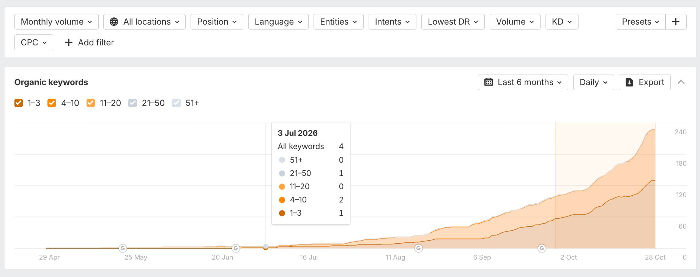
不过关键词变多，不等于流量真正起飞。再打开 Organic traffic by intent，这次才找到更准确的拐点。
9 月 3 日，图上 Informational 104、Commercial 6、Branded 4，合计只有 114 的估算月自然搜索流量。9 月 4 日前后突然跳到约 1,500，随后回撤；9 月 19 日前后又跳到两三千，中间再有波动。10 月上旬以后开始更稳定地往上爬，到下旬冲上约 1.2 万。
这样时间窗口就清楚了：8 月以前只有少量排名，9 月开始真正获得搜索流量。 我们最关心的不是现在这张页面长什么样，而是起量前的 7–8 月做了什么。
打开 Ahrefs Page Inspect，直接比较历史文本。
7 月 27 日：先把老工具的内容重新做了一遍
在 Page Inspect 的历史日历里，8 月 2 日被标记为 Overhaul changes。拿 7 月 12 日的快照和 8 月 2 日比，页面自己的 Last updated 从 Mar 26, 2026 变成了 Jul 27, 2026。
这轮改动不是重新换词。H1 仍然是 Website Font Checker Tool Online，输入 URL、抓取 HTML/CSS、识别 Google Fonts、Adobe Fonts、自托管字体和系统字体的核心说明基本稳定。
真正变化的是页面下半部分。
Why Website Fonts Matter for Performance 原本只有比较简单的性能、CLS、隐私和可访问性说明。新版本把细节重新写了一遍：字体家族、字重和语言子集如何增加资源开销；回退字体的度量差异如何造成布局偏移；自托管字体为什么并不自动等于更快，还要考虑缓存、授权、子集化和分发。
Font Loading Best Practices 也是同样的处理。原来的建议比较绝对，新的内容加入了使用条件和技术权衡。不是机械地加字数，而是把技术事实写准、写深。
FAQ 变化更明显。原来是「这个工具做什么」「什么是 Font Stack」「免费吗」这些基础问题；新版本换成了更具体的技术问答：能否检测真正渲染的字体、最多检查多少 CSS 文件、为什么会漏掉字体、是否可能报告未实际使用的字体等。并不是单纯在原有十多个问题后面继续堆问答，而是把一部分泛问题替换成更贴近工具实际能力的问题。
上下文链接也收紧了。原来推荐的相关文章里有一些普通建站话题，改版后加入了更相关的 How to Choose Fonts for Your Website 和 Website Typography Guide。这两个方向和字体检测几乎是同一个任务链条。商业入口则加入 Website Fix Sprint 等「检测完问题，直接有人帮你修」的承接方式。
第一轮改版的特征很明确：核心工具不动，重点补足技术内容、真实使用问题和垂直专题链接。
但还没完。继续把 8 月 2 日和 9 月 1 日放在一起对比，第二次改动更重要。
8 月 5 日：工具能力和搜索意图一起扩张
9 月 1 日的版本里，Last updated 已经变成 Aug 5, 2026。这一次不只是文案优化，工具本身也变了。
旧版主要是：输入网站 URL → 分析 HTML/CSS → 返回字体家族、权重、来源。
新版多了真实字体预览和可编辑的 Preview text。检测出字体之后，如果能匹配 Google Fonts 的开源字体，可以直接显示样本；用户还可以修改一段文字，看看它在该字体下的表现。工具输出也进一步描述了字号、字重、颜色、行高，以及 body / h1 / h2 / p / a / button 等元素的排版信息。
它从一个「告诉你这是什么字体」的检查工具，向「识别、查看效果、进一步分析怎么用」延伸了一步。
然后是一段非常关键的新增内容，H2 直接写：
Find and Identify Fonts From Any Website
下面明确出现了 font detector、font finder、font identifier，并介绍字体家族、来源、字体栈、CSS 属性和可复制的样式信息。
这段 H2 就放在工具工作原理和字体最佳实践之间。原来的 Website Font Checker 定位没有放弃，却借着新功能把页面语义自然扩展到几个更大、更宽泛的词。不是为 font finder 单独再做一个内页，而是在原本有少量排名的 URL 上，继续向相邻需求进攻。
FAQ 又跟着产品变化：新增字体预览用不用目标网站的专有字体文件、能不能编辑预览文字、是否可以下载网站字体文件等问题。每个新增问答都对应具体的功能与使用边界。
网站导航也在这轮重组，工具分类从原来的四组调整为 SEO & Local、Crawl & Site Health、Performance & WordPress、AI & Site Intelligence 等。Font Checker 继续占据工具导航的位置。
我们现在看到的结果是：8 月初已经有了 Font Detector / Finder / Identifier 的语义和对应功能，9 月 4 日附近开始第一次明显起量。 这组动作是整个案例里最值得学的部分。
9 月 27 日：流量已经起来，重点转向商业承接
再比较 9 月 1 日和 10 月 1 日，页面自标更新到了 Sep 27, 2026。
这一次，核心工具、Find and Identify Fonts 专题、字体预览和 FAQ 基本保留。明显增加的是商业组件：Portfolio、更多客户案例、See 19 client websites，以及面向 Freelancers & Agencies 的推荐合作。一次性项目给 10% 佣金、最低 $100；月度服务则是前六个月每月 10%。还有把检测结果发送给团队或通过邮件获取副本的入口。
这里的逻辑也很清楚。免费工具带来用户，用户检测到问题，接下来用服务、案例和推荐关系承接需求。只是 9 月 27 日已经晚于 9 月上旬和中旬的两次流量跃升，不能拿这次改版解释最初的起量。
三次改版连起来看，顺序很漂亮：7 月底重做技术内容与专题链接，8 月初升级功能并扩展大词语义，9 月底强化商业转化。
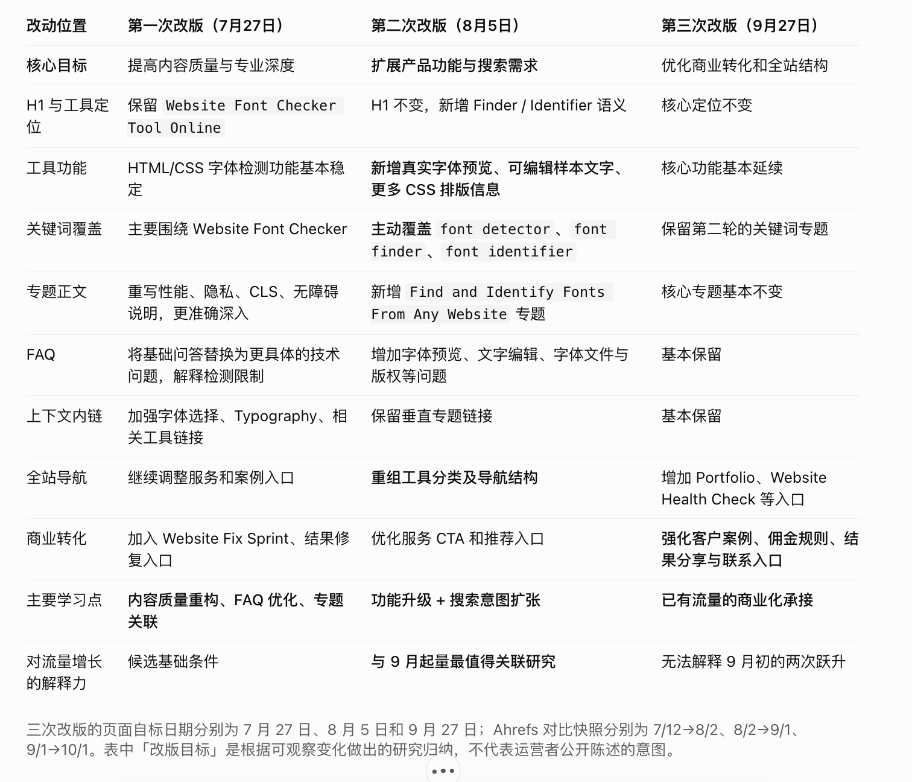
外链没有大动静，那 201 条内链呢？
到这里还差一个变量：外链。
把 Referring Domains 图拉出来看，Font Checker 7–8 月一直是 0 个直接引荐域名，9 月初第一轮流量跃升时也是 0。9 月上旬稍后 Ahrefs 才首次记录到 1 个；到 10 月下旬也只有 2 个。与此同时，域名 DR 约 59，单页 UR 长时间只有 6 左右。
也就是说，这个内页并没有伴随增长获得一批明显的直接外链。那会不会是内链集中倾斜？
再查 Internal links → Incoming，Ahrefs 一共列出 201 条。我们把前两页的 200 条都导出来按 First seen 重新统计：其中 183 条在 7 月 27 日之前就已首次发现，8 月首次发现的只有 1 条。大多数用的是统一锚文本 Font Checker，显然大量来自网站导航或公共模块。
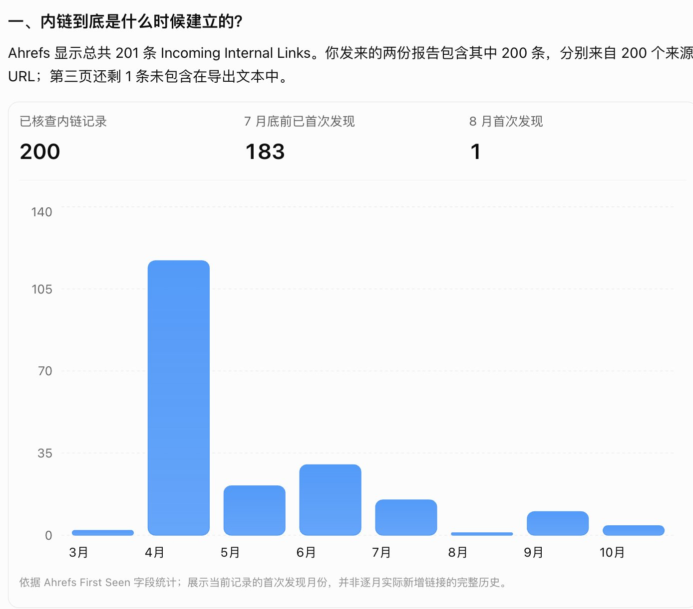
这个结果也很有意思。我们本来怀疑 8 月会不会突然给核心页加了很多内链，事实并不是这样。站内支持早就存在：光首页在 4 月就被发现有指向 Font Checker 的链接，首页本身还有 400 多个引荐域名。
真正值得注意的只有 7 月 30 日前后两条高度相关的内容链接：字体选择指南和网站 Typography 指南都链接到 Font Checker；而 Font Checker 的 8 月快照中也出现了指向这两篇文章的相关链接。这是少量但更聚焦的专题关联，而不是一次大规模内链灌注。
所以，到 7 月初，这张页面已经拥有相当多的内链和一个 DR 50 多的域名基础，却仍然只有极少量关键词排名。7 月底到 8 月初，两轮改版把技术内容、FAQ、专题链接、工具功能和相邻大词一起做了上去；9 月才真正开始获得流量。
我们原先怀疑它靠大量加内页、加外链或堆站内链接起飞。一路反查下来，最值得注意的反而是：那些基础早就有了，真正发生在流量拐点之前的，是对一张已经上线、已有初始排名的工具页连续两次深入改造。